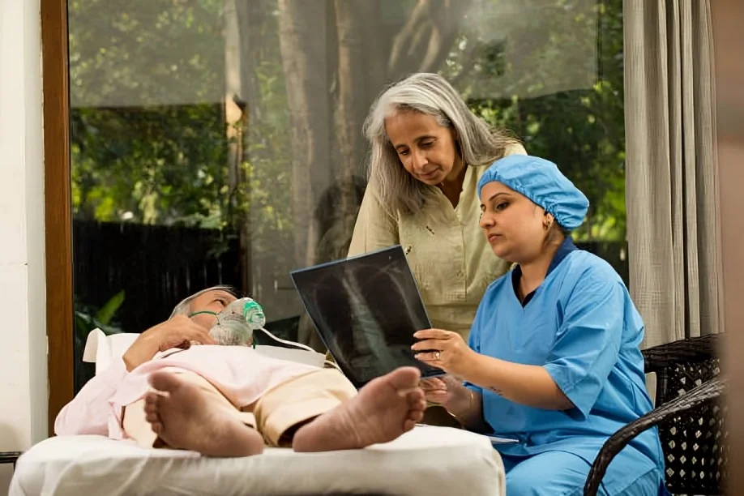

Palliative Care at Home in Bangalore | Compassionate 24/7 Bedside Care
Providing dignified, doctor-aligned end-of-life support, clinical pain management, and specialized home nursing across Bengaluru.

What is Home Palliative Care?
Palliative care is specialized medical and nursing support designed to relieve pain, physical discomfort, and emotional stress for individuals facing serious, progressive, or terminal conditions including advanced cancer, stroke, end-stage renal disease, neurological disorders, and severe heart failure.
At Ashok Healthcare, our home palliative care services bring clinical monitoring, symptom support, and compassionate care directly to your family member’s bedside. We help patients across Bangalore remain in the familiar surroundings of home while receiving care coordinated with their treating clinician.
Our Comprehensive Palliative Care Services in Bangalore
We offer flexible 12-hour day or night shifts and 24-hour live-in nursing support tailored to the patient's clinical status and family requirements.
Symptom & Pain Management
Doctor-prescribed pain relief and medication support, symptom observation, IV fluids, and medication tracking as directed by the treating clinician.
Tracheostomy & Respiratory Support
Airway clearance, suctioning, nebulization, and support with oxygen concentrators, BiPAP, or home ventilator systems as prescribed.
Tube Feeding & Catheter Management
Safe Ryle’s Tube (NG tube) and PEG tube feeding support, Foley catheter care, hygiene, and infection-control practices.
Bedsore & Wound Dressing
Pressure-ulcer dressing, scheduled repositioning, skin monitoring, and anti-bedsore air mattress setup where suitable.
Dignified Daily Living Support
Gentle sponge baths, oral hygiene, grooming, bed-to-chair mobility assistance, and fall-prevention support.
Emotional & Family Support
Compassionate guidance, caregiver respite, and family communication through complex care and end-of-life phases.
Why Choose Ashok Healthcare for Palliative Care in Bengaluru?
Ex-Apollo Clinical Leadership
Founded by Ashok Doddamani (B.Sc Nursing, MBA), with over a decade of emergency and hospital leadership experience at Apollo Hospitals and 108 Emergency Services.
Rapid 2 to 3 Hour Doorstep Deployment
From our Yeshwanthpur hub, our care team and home-care equipment can reach many Bangalore locations within hours, subject to availability and assessment.
Certified Nursing Team
Background-verified GNM and B.Sc nurses with experience in ICU step-down protocols, geriatric care, and oncology support.
In-House Medical Equipment
Setup support for motorized ICU beds, suction units, oxygen machines, and cardiac monitors through Ashok Surgical.
24/7 Clinical & Emergency Backup
Ongoing care coordination with access to our 24/7 ALS Ambulance transport network.
Areas We Serve Across Bengaluru
Our care managers, nursing staff, and equipment dispatch serve key neighborhoods across the city:
- North Bangalore: Yeshwanthpur, Malleshwaram, Rajajinagar, Mathikere, Hebbal, Yelahanka, Sadashivanagar, Vidyaranyapura.
- Central & East Bangalore: Indiranagar, Koramangala, Whitefield, MG Road, Frazer Town, Benson Town.
- South & West Bangalore: Jayanagar, JP Nagar, Banashankari, Basaveshwar Nagar, Vijayanagar, Kengeri.
Related Home Healthcare Services
Explore related care and support options available from Ashok Healthcare:
Frequently Asked Questions
1. What is home palliative care, and who is it intended for?
Home palliative care is medical and bedside nursing support delivered at home to relieve pain, physical discomfort, and emotional stress for people living with serious, progressive, or terminal conditions, such as advanced cancer, post-stroke paralysis, terminal heart failure, end-stage renal disease, and progressive neurological disorders.
2. What is the difference between palliative care and hospice care?
Palliative care can begin at any stage of a serious illness and may accompany active treatments such as chemotherapy, dialysis, or surgery. Hospice care is focused on comfort, dignity, and symptom management when active curative treatment is no longer viable or chosen. Ashok Healthcare provides home palliative and end-of-life hospice care in Bangalore.
3. How quickly can a palliative care team deploy to my home in Bangalore?
From our central hub in Yeshwanthpur, we aim to deploy registered GNM/B.Sc nurses and dispatch home-care equipment within 2 to 3 hours across many Bangalore locations, subject to availability and the patient's requirements.
4. Can my family member receive palliative care at home while continuing active medical treatments?
Yes. Palliative care can be coordinated with treating hospital specialists and primary physicians. Our nursing team follows the prescribed care plan to support symptoms and treatment-related care while active treatment continues.
5. What specific clinical procedures can your home nurses handle?
Depending on the care plan and the nurse's scope of practice, support may include:
- Tracheostomy suctioning and inner cannula care.
- Enteral tube feeding via Ryle’s Tube (NG tube) and PEG tubes.
- Foley catheter care and hygiene maintenance.
- Stage 1 to Stage 4 pressure-ulcer dressing and wound management.
- IV line maintenance and doctor-prescribed medication schedules.
6. Do you supply necessary medical equipment like ICU beds, oxygen concentrators, and BiPAPs?
Yes. Through Ashok Surgical, we deliver and set up 5L/10L oxygen concentrators, motorized 3/5-function ICU beds, suction apparatus, multipara monitors, BiPAP machines, and anti-bedsore ripple air mattresses, subject to availability and clinical suitability.
7. How is pain managed effectively for bedridden or terminally ill patients at home?
Our nursing team follows pain-management protocols prescribed by the treating doctor. These may include scheduled oral analgesics, transdermal patches, or IV medications as directed. Medication choices and adjustments remain the responsibility of the treating clinician.
8. What care shift options do you offer for home palliative nursing in Bangalore?
- 12-hour day or night shifts: For daytime procedures, medication cycles, or night monitoring.
- 24-hour live-in nursing: Round-the-clock bedside support for patients who need continuous care, subject to availability.
9. How do you ensure safety and hygiene during home nursing care?
Assigned nurses undergo background checks, clinical skill assessments, and police verification. They follow infection-control and personal-hygiene practices, maintain care documentation, and receive supervisory reviews.
10. Can home palliative care prevent frequent hospital readmissions?
Continuous monitoring and symptom support may help identify concerns early, but home palliative care cannot guarantee that hospital visits or readmissions will be prevented. Seek medical advice promptly if symptoms worsen or the treating clinician recommends hospital evaluation.
11. Do you provide emergency transport if the patient's condition worsens?
Yes. Ashok Healthcare operates a 24/7 Emergency Advanced Life Support (ALS) Ambulance network. Our ambulance team can coordinate transfers to hospitals across Bengaluru, subject to availability.
12. Does palliative care at home include emotional and psychological support for the family?
Yes. Our care team offers compassionate support, family guidance, caregiver respite, and clear communication through the illness journey. Specialist psychological support can be discussed with the patient's treating team.
13. How does your onboarding process work when setting up home palliative care?
- Initial clinical assessment: Review of prescriptions, hospital discharge summaries, and current health status.
- Custom care plan: A nursing routine aligned with the treating physician's guidance.
- Caregiver matching: Assignment of a GNM/B.Sc nurse suited to the patient's care requirements.
- Deployment and follow-up: Home setup and ongoing supervisory reviews.
14. How can I schedule a home palliative care assessment in Bangalore?
Call our Care Manager 24/7 at +91 78297 53538 or visit our central facility at A.T. Street, Yeshwanthpur, Bengaluru. You can also request a callback through ashokhealthcare.in.
Request a Home Care Assessment
Speak directly with our Care Manager to discuss a personalized palliative care plan for your loved one.
24/7 Emergency Line: +91 78297 53538
Central Hub: A.T. Street, Yeshwanthpur, Bengaluru, Karnataka
Website: ashokhealthcare.in